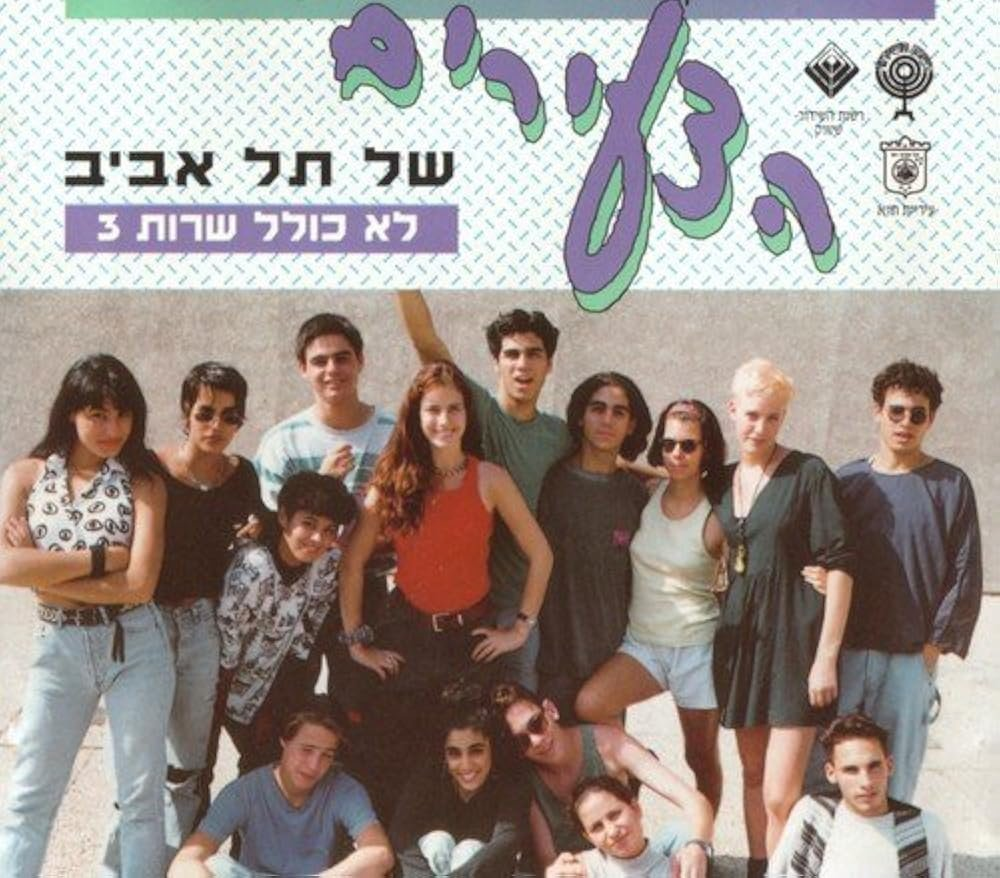
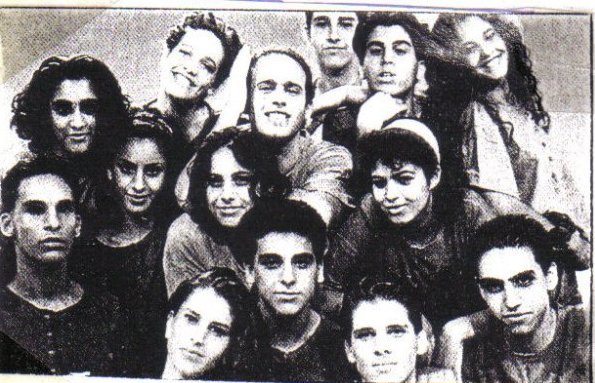
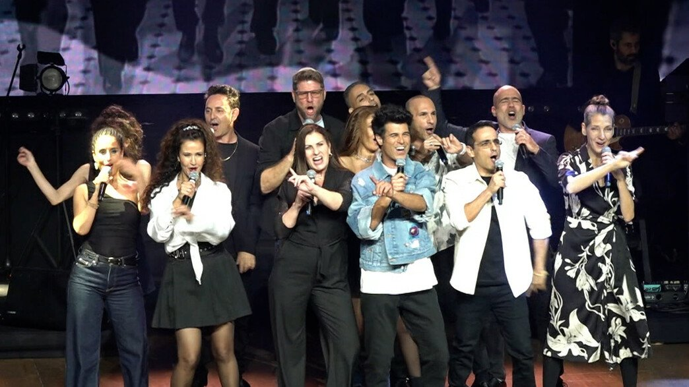
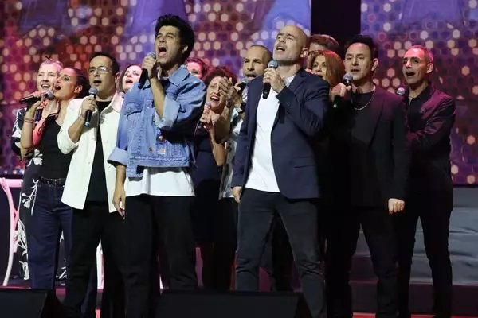
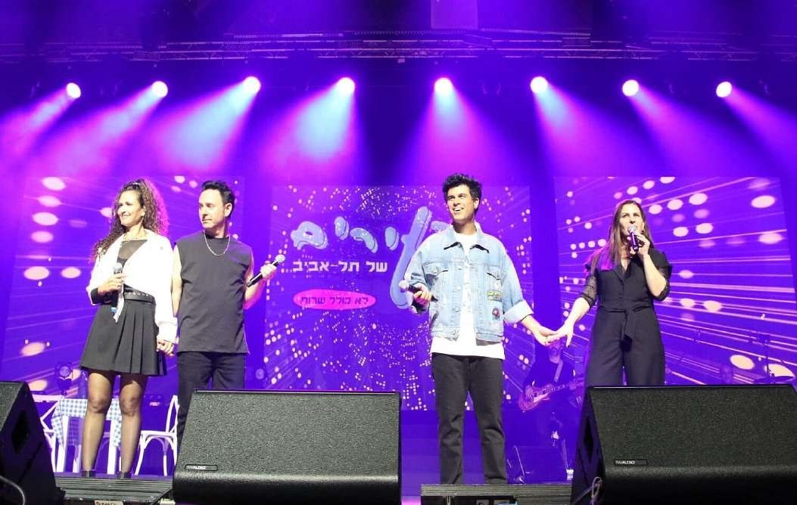

A nostalgic reunion of the legendary 1990s youth TV musical series Lo Kolel Shirut ("Not Including Service") — the stage brought together almost the entire original cast of Tze'irei Tel Aviv ("The Youth of Tel Aviv") 33 years later. Stars of the show reunited to perform beloved hits and give audiences a night of shared memory. The concert recreated the iconic café from the series, a setting etched in the collective memory of a generation of Israelis. While formally a "greatest hits" concert, in practice it became a living "class reunion," full of banter, laughter, and intimate recollections.
Creative Team
- Director: Amit Epstein
- Video Art & Archival Material: Nick Dreyden (projections and live visual design)
- Producer: Yariv Yefet Productions, in collaboration with the Tel Aviv Municipality
- Venue: Heichal HaTarbut (Charles Bronfman Auditorium), Tel Aviv
Premiere
March 17, 2025 — Heichal HaTarbut, Tel Aviv (with encore shows on March 18 and 19 due to overwhelming demand).
Visual & Multimedia Concept
The heartbeat of the production was its multimedia environment, designed by Nick Dreyden. Three giant LED screens dominated the stage, seamlessly integrating past and present:
- Archival clips from the 1990s series — restored and re-edited by Dreyden — resurfaced as emotional flashbacks, provoking waves of nostalgia.
- These fragments blended into live feeds of the current performance, so audiences saw the young faces of their idols transform into the mature artists singing before them.
- In one of the most powerful moments, during "Shmor Lecha Chalom Katan" ("Keep Yourself a Little Dream"), footage of the cast as teenagers dissolved into the live performance of the same song, eliciting a standing ovation.
The screens also amplified emotion, showing close-ups in real time, ensuring that even the farthest audience members could feel connected. The projection design gave the concert its ritual quality: in the finale, as the entire ensemble took a bow, the words «תמיד צעירים» ("Forever Young") illuminated the hall while names of all who had created the original show scrolled across the screens. This visual gesture turned the night into an act of collective memory, moving many to tears. Light design and smoke effects enhanced the rock-concert energy, but it was Dreyden's video layer that transformed the evening from a nostalgic concert into a multimedia ceremony of national memory.
Reception
The reunion was a cultural phenomenon. Press headlines called it "a 100-minute injection of optimism". Critic Nitzan Langer described the performance of "Kmo Tfila" ("Comme Toi / Like a Prayer") as "a near-religious experience." As reported: "The not-so-young audience stood on their feet from the very first song… and when Elinor Aharon sang 'Kmo Tfila,' it became almost liturgical." Audiences noted that the concert gave a sense of unity in a difficult national moment: "For a brief time we forgot the chaos outside the hall and remembered how to believe in something good again." Thanks to its multimedia storytelling, the show was not just a nostalgic event but, as Haaretz put it, "a farewell party for a generation that once believed in peace."
Gallery




